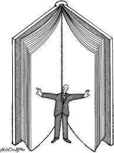
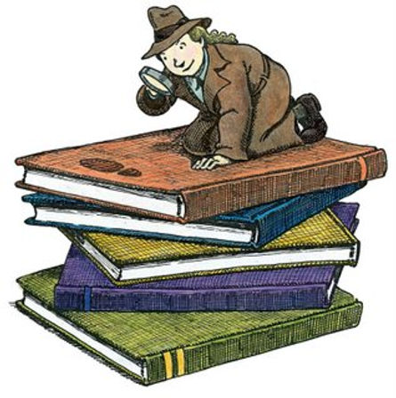
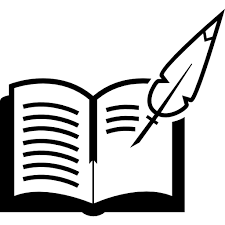

🎬 Teoría, Estructura y Cronograma Académico 🎬
¿Qué es? Es un texto de carácter argumentativo y expositivo en el cual se examina, analiza y pondera una obra artística, literaria o científica (como un filme o un libro). No se limita a resumir, sino que exige adoptar una postura clara y defenderla mediante argumentos sólidos.
¿Para qué sirve? Su propósito principal es orientar al lector, ayudándole a decidir si vale la pena dedicar tiempo o recursos a la obra reseñada. Además, funciona como un valioso ejercicio académico para desarrollar el pensamiento crítico y la redacción.

Estructura Ideal:

Normativa: APA 7ª Ed. | Portada | Máximo 15% IA (85% Inteligencia Humana).
Fase 1 (Análisis de Contexto):
Fase 2 (Escritura de la Reseña):
